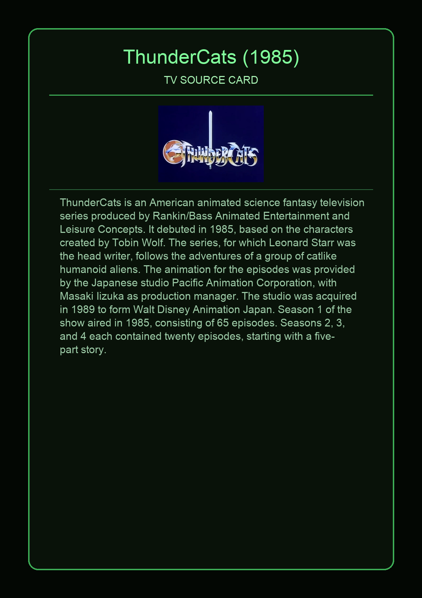
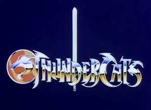

ThunderCats is an American animated science fantasy television series produced by Rankin/Bass Animated Entertainment and Leisure Concepts. It debuted in 1985, based on the characters created by Tobin Wolf. The series, for which Leonard Starr was the head writer, follows the adventures of a group of catlike humanoid aliens. The animation for the episodes was provided by the Japanese studio Pacific Animation Corporation, with Masaki Iizuka as production manager. The studio was acquired in 1989 to form Walt Disney Animation Japan. Season 1 of the show aired in 1985, consisting of 65 episodes. Seasons 2, 3, and 4 each contained twenty episodes, starting with a five-part story.
This page aggregates references to the source material behind Name Lore entries.